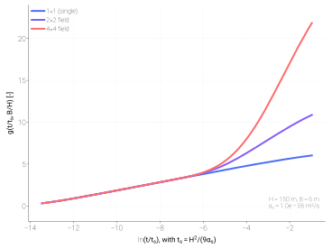

Ground-source heat pump boiler (GSHPB)¶
The GSHPB family pairs the shared refrigerant cycle with a
ground-loop source side (vertical borehole field) and a DHW tank
sink.
Overview¶
GSHPB solves the closed refrigerant cycle against a borehole heat
exchanger characterised by a precomputed g-function. The class is
tmhp.GroundSourceHeatPumpBoiler. Composed variants
extend it the same way ASHPB’s do:
tmhp.GSHPB_STC_preheattmhp.GSHPB_STC_tanktmhp.GSHPB_STC_groundtmhp.GSHPB_STC_routedtmhp.GSHPB_PV_ESS
The base class and all variants report E_tot [W] as the whole electric
draw: compressor E_cmp + source-loop pump E_pmp + the collector-loop
pump E_stc_pump (tank, ground, routed; the mains-driven preheat has none)
+ the UV lamp E_uv (the base class and GSHPB_PV_ESS with uv=; the
STC variants do not simulate a uv= lamp and warn if one is passed). The
lamp is counted once: GSHPB_PV_ESS routes the base class’s E_tot.
A model run twice with the same inputs gives the same result.
The collector, its irradiance inputs (direct-normal I_DN and
diffuse-horizontal I_dH, transposed to the collector plane with the sun
position from latitude/longitude/utc_offset_h/start_time), the
loop controller with its storage high limit and the preheat circuit are the
same as for the air-source variants — see Air-source heat pump boiler (ASHPB), “Solar inputs and the
collector model”. The STC scenario logic is shared by both families
(tmhp._stc_scenarios).
Base usage¶
from tmhp import GroundSourceHeatPumpBoiler
gshpb = GroundSourceHeatPumpBoiler(
ref="R290",
N_1=1, N_2=1, # single borehole
H_b=150.0, # depth [m]
)
result = gshpb.analyze_steady(
T_tank_w=55.0,
T_source=10.0, # ground-loop fluid inlet [°C]
Q_ref_tank=8_000,
)
Default sizing¶
hp_capacity (default 8 kW) and the refrigerant are enough to build a
machine: every other size follows the capacity, so the rated cycle is the same
at 1 kW and at 100 kW (B0/W35: condensing 5 K above the tank, evaporating about
6 K below the entering fluid, COP of the cycle 4.2 with the default
refrigerant, R290, and the default efficiency map). B0 is a brine point: the
loop liquid leaves the heat pump at -3 °C. The default loop liquid is
therefore an antifreeze, 25 % ethylene glycol; a loop declared as water is
refused there (see Ground-loop liquid and its freezing limit).
Argument |
Default |
Rule |
|---|---|---|
|
|
5 K condensing approach at the rated duty (as ASHPB). |
|
|
Fluid-to-refrigerant evaporator, the coefficient of
|
|
|
Rated source-side heat at a 3 K loop temperature difference:
|
|
|
Upper bound of ASHRAE ground-loop pumping grade B, 21.3 W per kW
(171 W at 8 kW). Used when the hydraulic pump model
( |
|
200 m boreholes on a near-square grid |
With none of the three given, boreholes are added until the rated
source-side heat ( |
A value you pass is used as given (the deprecated aliases UA_tank,
UA_cond_design, UA_evap_design and dV_b_f_lpm keep their
precedence). The constructor warns (UserWarning) when
a field you describe carries more than 80 W/m at the rated point;
the default flow is laminar in the U-tubes (
Re < 2300, e.g. many boreholes on a small machine, or a viscous antifreeze mixture);T_tank_w_upper_boundplus the tank heat-exchanger approach (hp_capacity / UA_tank_hx) is at or above the refrigerant’s critical temperature: no cycle exists there, so the tank could not reach the set point.
The compressor envelope also ends at a condensing pressure (T_cond_max,
by refrigerant: R410A, R32, R407C 65 °C; R290 75 °C; R134a 80 °C; see
Reference points and operating limits). The cycle condenses at the
tank temperature plus the tank heat-exchanger approach, so the highest tank
temperature the machine heats at its nameplate duty is T_cond_max less
hp_capacity / UA_tank_hx. A T_tank_w_upper_bound above that cut-out
is capped at it (UserWarning; T_tank_w_setpoints_requested keeps the
values asked for), and the thermostat stops the heat pump there.
analyze_steady against a hotter tank returns the duty that condenses on
the limit (capacity_clamped == "max", capacity_binding ==
"condensing_temperature"), or the off state with
failure_reason == "condensing_temp_above_max" when no duty fits. A 65 °C
set point is inside the envelope of R290 and
R134a; R410A, R32 and R407C reach about 60 °C. This is why the default
refrigerant is R290 (it was R410A): the default machine charges its tank to
the default 65 °C set point at 70 °C condensing, 5 K inside the limit, at the
nameplate duty all the way. With ref="R410A" give
T_tank_w_upper_bound=60.
Cycle closures¶
Two relations hold in every running result (analyze_steady and each
analyze_dynamic row).
Suction superheat. The gas leaves the evaporator no hotter than the entering ground fluid: the superheat is
dT_superheator the evaporator approach lessdT_hx_min, whichever is smaller (the same cap as ASHPB).Tank heat exchanger on a speed bound. When the request is below what the compressor delivers at
rps_min(capacity_clamped == "min") or above itsrps_maxduty ("max"), the condensing temperature is solved from the heat actually delivered,Q_ref_tank = UA_tank_hx × dT_ref_tank, not from the request.dT_ref_tank [K]is the approach the cycle ran at andtank_hx_residual [W]the remaining imbalance (zero unless the closure could not be bracketed, as on the pressure-ratio floor). On the speed floor the running machine no longer depends on the request.
The evaporator approach is searched between 1 and 20 K and, when the heat exchanger already carries the duty at 1 K (a compressor at low speed against an evaporator sized for the full capacity), down to 0.05 K.
Ground-loop liquid and its freezing limit¶
source_fluid says what circulates between the borefield and the
evaporator (tmhp.source_fluid). The same argument and the same rule
apply to tmhp.GroundSourceHeatPump and
tmhp.WaterSourceHeatPumpBoiler. Left out, the two ground-source
models run on 25 % ethylene glycol ("MEG-25%") and the water-source
boiler on water: a ground loop is rated and operated with brine (EN 14511
B0, ISO 13256-1 liquid entering at 0 °C), and of the common fills this one
stays turbulent in the default U-tube at the default flow.
|
Freezing point |
Operating limit |
|
Viscosity |
Conductivity |
|---|---|---|---|---|---|
|
-11.0 °C |
-8.0 °C |
0.93 |
3.7 mPa s |
0.465 W/(m K) |
|
0.0 °C |
3.0 °C |
1.00 |
1.0 mPa s |
0.606 W/(m K) |
|
-7.2 °C |
-4.2 °C |
0.96 |
4.3 mPa s |
0.471 W/(m K) |
|
-9.8 °C |
-6.8 °C |
0.95 |
5.5 mPa s |
0.450 W/(m K) |
|
-12.8 °C |
-9.8 °C |
0.94 |
7.1 mPa s |
0.428 W/(m K) |
|
-14.6 °C |
-11.6 °C |
0.91 |
4.3 mPa s |
0.446 W/(m K) |
|
-11.1 °C |
-8.1 °C |
1.02 |
5.2 mPa s |
0.448 W/(m K) |
MPG is propylene glycol, MEG ethylene glycol; the number is the
concentration by mass, anything from 5 to 60 % ("MPG-33%"). Freezing point
and properties of a mixture are read from CoolProp’s incompressible mixtures
(INCOMP::MEG, MPG, MEA: the fits of Å. Melinder, Properties of
Secondary Working Fluids for Indirect Systems, IIR, 2010) at 0 °C, the liquid
inlet of the brine rating points, and are constants during a run; water keeps
the constants the models have always used (1000 kg/m³, 4186 J/(kg K),
1.0 mPa s, 0.606 W/(m K)). The Reynolds number of the source side (the
laminar-flow warning and the film inside the U-tube in R_b) takes the
viscosity at the heating rating inlet instead, 0 °C for GSHP and GSHPB and
10 °C for WSHPB: the table’s value for a mixture, and for water 1.79 mPa s
(ground loop) or 1.31 mPa s (water-source boiler) rather than 1.0
(tmhp.source_fluid.SourceFluid.viscosity(), attribute
mu_bhe_f_design).
A tmhp.source_fluid.SourceFluid built by hand stands for any other
liquid or any other limit.
The limit. The loop liquid is never colder than its freezing point plus
3 K. In heating the coldest liquid is the one leaving the evaporator
(T_bhe_f_in [°C]). The 3 K is the distance between that liquid and the
evaporator surface: with the default source heat exchanger and flow the
refrigerant evaporates 2.9 K below the leaving liquid at the rated duty, so
the margin keeps the refrigerant, and the plate it boils on, at or above the
freezing point. It is also inside the range of manufacturers’ installation
rules, which ask for a freezing point 10-15 °F below the lowest entering
loop temperature (2.6-5.3 K below the leaving liquid at a 3 K loop
difference) and for antifreeze whenever the loop may enter below 40-45 °F.
At the limit a variable-speed unit lowers its compressor speed, and so does
the model (analyze_steady applies the limits in this order: the compressor
envelope with its condensing limit reduces the duty first, the loop liquid’s
limit is held on what the envelope allows, and a request below the
minimum-speed duty is then reported as the mean of on/off operation; a
compressor already on its speed floor has no smaller state, so there the
limit switches it off). A duty that would chill the liquid below the limit is reduced to the
largest one that does not: the result runs with capacity_clamped == "max"
and capacity_binding == "source_fluid_freezing", Q_max [W] being what it
delivers. When no duty helps – the liquid already arrives below the limit, or
it leaves below it even at the compressor’s lowest speed – the compressor does
not run: the off state with failure_reason == "source_fluid_freezing" (heat
and power 0, COP NaN) and a RuntimeWarning. In analyze_dynamic the
limit is applied to the liquid while the compressor runs
(T_bhe_f_in_running [°C]); reduced steps carry capacity_binding, off
steps the failure_reason, and one RuntimeWarning per run says that it
happened.
gshpb = GroundSourceHeatPumpBoiler() # 8 kW, 25 % ethylene glycol
gshpb.analyze_steady(T_tank_w=35, T_source=0, Q_ref_tank=8000) # 8.0 kW, leaves at -3.0 °C
gshpb.analyze_steady(T_tank_w=35, T_source=-6, Q_ref_tank=8000) # 5.3 kW, leaves at -7.9 °C
gshpb.analyze_steady(T_tank_w=35, T_source=-10, Q_ref_tank=8000) # off: source_fluid_freezing
water = GroundSourceHeatPumpBoiler(source_fluid="water")
water.analyze_steady(T_tank_w=45, T_source=10, Q_ref_tank=8000) # 8.0 kW, leaves at 7.0 °C
water.analyze_steady(T_tank_w=45, T_source=5, Q_ref_tank=8000) # 5.5 kW, leaves at 3.0 °C
water.analyze_steady(T_tank_w=45, T_source=0, Q_ref_tank=8000) # off: source_fluid_freezing
What the loop liquid changes. Its ρ c enters the loop temperature
difference, the evaporator effectiveness and the default flow (which keeps the
3 K); its viscosity and conductivity enter the borehole resistance R_b (the
film inside the U-tube) and the laminar-flow warning. Five things do not
follow it:
UA_groundis the conductance you give or0.18 × hp_capacity; it is not derated for the mixture’s poorer film coefficient. Pass a smaller value when you know it.The default pump power is the ASHRAE grade B allowance for the capacity, whatever the liquid. A grade is a property of the whole installation, pipe sizes included, so a glycol loop designed to grade B has it too.
The pipe loss of the hydraulic pump model (
hydraulic_pump,pump_map,ground_flow_control="optimal_power"), the flow-dependent borehole resistance (variable_Rb) and the fluid-temperature closure of the coupled ground-flow solver are evaluated with the properties of water (tmhp.ground_loop,tmhp.ground_flow_control), also for the default glycol. The pump power of the hydraulic model is then understated (the pipe loss is computed at 1.0 instead of 3.7 mPa s), and the loop temperature of the coupled solver is closed with a heat-capacity flow 7 % too large: a 16 °C borehole wall is reported as 15.97 °C. For these optionssource_fluid="water"is the consistent choice above 6 °C. A model whosesource_fluidyou chose says so in aUserWarning; one left on its default does not.tmhp.borefield.FieldGroundResponse.attach()evaluates the borehole resistance of its field for water.The dynamic borehole response (
borehole_dynamics, on by default) is built with the heat capacity and density of water (tmhp.borehole_capacity.enable_borehole_dynamics()). It cancels the loop temperature differenceQ / (2 ṁ c)at the start of a run with water’sṁ c, 7 % larger than that of the default flow of the default glycol: the liquid entering the heat pump then starts 0.11 K above the ground instead of at it (8 kW machine, rated duty).
The flow optimiser of ground_flow_control="optimal_power" does not know
the limit either: it picks the flow of least total power, which near the limit
can be a low flow with a large loop temperature difference. The duty is then
reduced, or the point refused, where a larger flow would have run. Prescribe
the flow (constant control, ground_flow_lpm) for a loop that runs near its
limit.
At 0 °C a glycol mixture is four to seven times as viscous as water. In the
default 26 mm U-tube the default 3 K flow of the default 25 % ethylene glycol
is turbulent down to about 2.6 kW per borehole (Re 2300 at 10 L/min;
3520 for a 4 kW borehole, 7040 for 8 kW). Below that, and for propylene
glycol of the same strength below about 4 kW per borehole, the flow is
laminar, the borehole resistance rises by half and the constructor warns:
give a larger ground_flow_ref_lpm or a smaller pipe.
Note
Until November 2026 the loop liquid was water with no freezing point: a
cold source returned a running cycle with “water” at -3 °C (B0) or -12 °C.
The ground-source models now default to 25 % ethylene glycol, which runs
down to -8.0 °C and whose properties move the results a little (system
COP of the 4 kW GroundSourceHeatPump against a 0 °C borehole wall
3.508, 3.520 before, and 3.495 since its indoor coil takes the room-air
density; B0/W35 and B0/W55 of this boiler are the same with
the glycol as they were with water, 3.870 and 2.651 with R290), and a loop
declared as water stops at 3 °C. To reproduce the
earlier numbers exactly – the properties of water and no limit to speak
of – pass a hand-built fluid:
from tmhp.source_fluid import SourceFluid
legacy = SourceFluid("water without a freezing point", -60.0, rho=1000.0, cp=4186.0, mu=0.001, k=0.606)
gshpb = GroundSourceHeatPumpBoiler(source_fluid=legacy)
Steady state below the minimum capacity¶
A request below what the compressor delivers at rps_min is met by
switching it on and off. analyze_steady reports such a point
(capacity_clamped == "min") as the mean over the cycling period, with the
same keys as Air-source heat pump (ASHP — space conditioning) and Ground-source heat pump (GSHP — space conditioning) (tmhp.cycling):
Q_ref_tank [W]equals the request.Q_min [W]is the duty of the running machine andcapacity_ratio [-]the request divided by it (the CR of EN 14825).runtime_fraction [-], the share of the time the compressor runs, equals CR: heat and refrigerant rates (Q_ref_tank,Q_ref_ground,m_dot_ref) are the running values times it. This is how a dynamic step reports a compressor that ran part of the step.The electrical inputs (
E_cmp,E_pmp,E_tot) carry the EN 14825 degradation for a unit delivering to water,COP = COP_min · CR / (Cc · CR + 1 − Cc). The standard takes the start-up loss of a hydronic unit as negligible and charges the power the unit draws while its compressor is off;Ccis one minus that power over the running input. The mean input is therefore the running input timesCR + (1 − Cc)(1 − CR), and both COPs are the continuous ones timespart_load_factor [-].E_cycling_loss [W]is the off-state part.Q_bhe [W]is the mean ground-side heat less the mean pump power.Temperatures, pressures and speed are those of the running machine; the loop flow keeps its running value, as in a dynamic step.
Cd_cycling is that coefficient Cc (the constructor argument has the
same name in every family). The default 0.9 is the value the standard
prescribes for a unit that has not been tested: an off-state draw of a tenth
of the running input. For a unit with a measured standby power use
Cd_cycling = 1 − P_off / P_on; 1.0 is loss-free cycling; None
returns the continuous minimum-speed point, which delivers more than the
request (the behaviour before this report existed).
|
|
Mean input / running input |
|
|---|---|---|---|
0.1 |
0.526 |
0.190 |
0.1 |
0.2 |
0.714 |
0.280 |
0.2 |
0.4 |
0.870 |
0.460 |
0.4 |
0.6 |
0.938 |
0.640 |
0.6 |
0.8 |
0.976 |
0.820 |
0.8 |
1.0 |
1.000 |
1.000 |
1.0 |
The default machine (8 kW, R290) at a 0 °C source and a 35 °C tank delivers 1.81 kW at its minimum speed. A 400 W request used to return those 1.81 kW at 574 W of input; it now returns 400 W at 171 W (system COP 2.34 against 3.16 for the running machine), and a 1 kW request 1 kW at 342 W (COP 2.92). (With R410A, whose rated speed is lower, the minimum-speed duty is 3.05 kW.)
A dynamic run is not affected. There the tank thermostat switches the
compressor, which runs at hp_capacity — not at its minimum speed — for
runtime_fraction [-] of a step, and the row already is the step mean
(next section). No standby power is added to the off time of a dynamic run:
the 10 % default belongs to the standard’s part-load points, and applied to
a storage heater whose compressor runs a fifth of the day it would add more
than 40 % to the daily electricity.
Dynamic operation¶
analyze_dynamic follows the tank thermostat (T_tank_w_lower_bound
/ T_tank_w_upper_bound, 55 / 65 °C) inside each step: a step reports
the fraction of it the compressor ran (runtime_fraction [-]), its
starts (hp_starts [-]), and heat, power and ground heat averaged
over the step. min_on_time_s / min_off_time_s (default 0) hold
the compressor to a minimum run and rest time. See
Time step and the thermostat.
On a step the compressor runs only part of, loads are kept by source: the
compressor extracts only while it runs, a solar collector charging the
ground (GSHPB_STC_ground, GSHPB_STC_routed) injects for the whole
step. The ground history and the borehole wall take the step-average net
load (the ground’s step-mean response). The reported fluid temperatures
T_bhe_f* are step-time averages – the borehole resistance and loop
temperature difference are linear in the load, so continuous in the run
fraction and equal to the injection-only state when the compressor does
not run. T_bhe_f*_running are the fluid while the compressor runs (its
running extraction net of the injection), which the evaporator’s
source-side exergy uses. With the dynamic borehole (the default) they are
the mean over the run itself, from the borehole’s response to the running
load over that part of the step, so they do not jump when the thermostat
switches inside a step (Ground response); T_bhe is the physical
borehole wall.
The cycle of a step is solved against that running fluid of the same
step: the borehole’s response to the step’s own load, the borehole
resistance and the loop temperature difference are closed together with
the cycle (to 10-4 K), so in every running row
T_ref_evap_sat < T_bhe_f_out_running (and, with the steady borehole,
T_bhe_f_out_running <= T_bhe_f_out). (Earlier releases
fed the evaporator the previous step’s outlet, which could put the
evaporating temperature above the row’s own fluid.) A ground coupler
without preview_wall_temperature_rise cannot evaluate an uncommitted
load; with such a backend the cycle still reads the previous step’s outlet.
The constructor’s dt_s (default 3600 s) is not the simulation step:
it sets the shortest lag time tabulated for the g-function (never below
one hour; shorter lags are interpolated linearly from zero). Pass the
simulation step to analyze_dynamic. Hourly steps keep the tank
within its bounds, but they average hot-water draws over the hour; use
10–15 min steps or shorter when the draw profile matters.
Source-side mechanics¶
For ground-source models, the source-side dynamics are encoded in a g-function — the dimensionless thermal response of a borehole field to a unit heat-extraction step. TMHP precomputes the g-function once via pygfunction and interpolates it during the simulation, so the per-step cost stays constant whether the field is one borehole or a hundred.
The precomputed grid covers 1.5 × t_max_s (default one year). A longer
simulation does not extrapolate it: the g-function is recomputed by
pygfunction to cover the requested time (about 0.2 s for a 10 × 10 field), so
a multi-year run gives the same ground temperatures whatever t_max_s was.
Each step n reports the borehole-wall and fluid temperatures averaged over
[t_n, t_n + dt], including the response to that step’s own load; with an
hourly load history the hourly means are the same for dt = 60, 600 or
3600 s. Below one hour the g-function alone is the straight line from zero to
its one-hour value and a borehole resistance has no heat capacity, which
would move the source temperature by 3 to 5 K at every start and stop. The
models therefore add, by default and from the inputs they already have, the
heat capacity of fluid, pipe and grout, the short-time wall response and the
fluid transit through the U-tube (borehole_dynamics; False gives the
steady borehole, and model.borehole_dynamics says which one is in use).
A compressor that runs for part of a step sees the fluid of its own run, so
its source temperature is continuous through thermostat switching. Bore
fields other than a rectangular grid are set up with tmhp.borefield.
All of this is described in Ground response.


Dimensionless g-function for three rectangular borehole-field
geometries. The 1 × 1 field is the single-borehole baseline;
2 × 2 and 4 × 4 diverge as borehole-to-borehole thermal
interference accumulates over the multi-year horizon. Generated
by scripts/visualization/g_function_curve.py.¶
Sink-side mechanics¶
Single-node DHW tank, implicit per-step solve — the same demand-side
sink used by the air-source and water-source boiler families. A step whose
implicit solve returns no root is solved again with the same energy balance
by bracketing over 0-200 °C; if the balance has no solution there the step is
taken explicitly with the whole heat rate (heat pump, draw-off, loss,
subsystems) and a tmhp._tank_solve.TankSolveWarning names it. The tank
temperature is not held at the mains temperature: a tank in a cold room cools
below it.
Every step reports the hot-water service: Q_dhw_request [W] is the
scheduled draw at the set point T_mix_w_out counted from the mains
temperature, Q_dhw_unmet [W] the part not delivered because the water
left the mixing valve below the set point (the tank was colder than it) or
a level-varying tank cut the draw. analyze_dynamic warns once
(tmhp.dhw.DHWUnmetWarning) when a run leaves demand unmet; see
Was the hot water delivered? for the run totals.
A tank whose level varies (tank_always_full=False or
prevent_simultaneous_flow) follows the rules of the air-source boiler
(Air-source heat pump boiler (ASHPB), Sink-side mechanics): the draw stops at TANK_LEVEL_MIN
(0.1 % of the volume), the make-up at full, and the reported
tank_level [-], dV_tank_w_out [m3/s] and dV_tank_w_in [m3/s]
are the ones the step’s energy balance was solved with.
dV_mix_w_out [m3/s] is then the mixed water delivered and
dV_mix_w_out_unmet [m3/s] the demand the tank could not supply. Such a
run starts with tank_level_init of at least TANK_LEVEL_MIN.
Tank backends¶
tank_model selects how the tank itself is resolved (always-full tank,
no stc/pv/uv subsystem in the multi-node modes). A multi-node tank
keeps its volume – every litre drawn is replaced at once – so it cannot
hold the draw and the make-up apart: prevent_simultaneous_flow=True with
"stratified" or "hybrid" raises ValueError (use the lumped tank
for a level that falls during a draw):
|
Tank |
|---|---|
|
One fully mixed node. |
|
|
|
The same nodes with a tracked thermocline
( |
In the multi-node modes the condenser is a coil immersed in the tank:
UA_tank_hx spread evenly over the nodes, or all of it at
condenser_node (0 = top). Heat flows only into water colder than the
refrigerant:
The coil exchanges while the compressor runs. Over a step node
ireceivesf·UA_i·(T_end − T_i)⁺, withfthe row’sruntime_fraction,T_ithe node’s end-of-step temperature andT_endthe exchanger temperature at which the nodes receive the step’s condenser heatQ_ref_tank, solved by the tank step: the condensing temperature the run ends on. A node as hot as the refrigerant receives nothing and no node is heated pastT_end.The cycle condenses at the temperature that coil needs. With cold water at the bottom and hot water above the refrigerant temperature, only the cold nodes take heat and the cycle condenses near them, below what the mean tank temperature would give; in a mixed tank the two agree, and a one-node
"stratified"tank reproduces"lumped".The cycle of a step is solved at the mean of the condensing temperatures its run passes through, as the lumped tank solves it at the mean tank temperature of the run: the power of a step is the power along that path, not the power at the temperature the run ends on. The mean is the thermostat’s mean tank temperature of the run plus how far the coil’s condensing level lies above the tank’s mean, read from trial steps of the node model over the run.
T_ref_cond_sat_l [°C]is that mean;T_ref_cond_sat_l_peak [°C]is the highest condensing temperature of the step (the level the run ends on when it warms its water), which is the one no heated water exceeds. Before, a step took the level it ended on whenever the tank warmed by more than the coil’s approach in it, so a long step paid for a hotter condenser than its run had: a coil over the whole tank, 55 to 65 °C without a draw, 0.348 kWh at 60 s steps against 0.364 kWh at 600 s (+4.7 %; now 0.348 and 0.347, the lumped tank’s).The condensing temperature a step ends on is not taken above the condensing limit. A step whose heat would need more is held instead: the heat goes to the coil’s nodes below the envelope stop and none is heated past it; if they cannot take all of it the row’s
runtime_fraction, heat and power are what they took (hp_stop_reason == "condensing_limit") and the thermostat call stands. It is the same run in the next step, not a new start.A coil that reaches its envelope stop while the mean the thermostat reads is at the upper set point (within 0.5 K) has satisfied the thermostat: the call ends and the tank cools to the lower bound before the next start, as in the lumped tank. The two coincide whenever the set point is the envelope’s own – a requested set point above the envelope stop is capped at it (R32: 65 to 60 °C) – and the coil spans the tank.
The water around the coil can reach the envelope stop (the tank temperature at which the nameplate duty condenses on
T_cond_max, above) while the mean the thermostat reads is still below the set point. The in-step thermostat stops the compressor when the coil’s condensing level reaches the limit: after the run time at the nameplate duty that trial steps of the node model give for it (not at a mean temperature: with a large draw the coil’s water warms while the mean falls). While the call stands it then holds the coil’s water there: it runs the share of the rest of the step that delivers the heat the water loses (to the draw, the nodes below, the wall), never more than the nameplate duty at any moment – when a cold front reaches the coil inside a long step the hold lasts until it would take more, and the compressor then runs flat out while the coil’s water cools. The row is a normal one (failure_reason == "none",hp_stop_reason == "condensing_limit"), and the condensing temperature never needs to go above the limit. Before, each such step was an off row withcondensing_temp_above_maxand two or three cycle solves, and the results depended on the step (a top coil, R290, 6 h: 353 of 360 steps at 60 s, 30 of 36 at 600 s); the heat delivered now agrees from 60 s to 600 s steps (0.2738 kWh in that run), and so does the electricity (0.0899 and 0.0897 kWh; 0.0924 and 0.0953 before).
Results of a multi-node tank agree between 60 s and 600 s steps within
about 2 % of heat and 5 % of electricity, the lumped tank’s own margin
(a top coil under a 6 L/min draw that empties the tank in an hour, R290:
5.93 and 6.05 kWh of heat, 1.90 and 1.95 kWh of electricity; 1.91 and
2.12 kWh of electricity before). What remains is the node model’s time
resolution: the cold front of a draw smears faster in long steps
(docs/tank_backends/tank_backends.md). The trial steps that read the
coil’s level draw what the step itself does (the mixing valve takes more
tank water as the top cools), and the top node ends a step at the envelope
stop at most.
The thermostat reads the volume-average temperature T_tank_w [°C], so
on/off timing and delivered heat follow the lumped tank; with a coil that
reaches the top, the top node can sit several kelvin above
T_tank_w_upper_bound while staying below T_cond. Its tank balance
draws the hot water from the top node, not at the mean: the two take the
same heat while both are above the mixing set point, and a tank a draw has
left cold under a hot top still gives the scheduled heat (the lumped
balance would give lukewarm water, and a mean that rises while the tank’s
falls). Hot water leaves
from the top: the mixing valve, T_mix_w_out, Q_tank_w_out and
X_tank_w_out use T_tank_w_out [°C], the temperature of the water that
left during the step. The multi-node modes add T_tank_w_out,
T_tank_w_top, T_tank_w_bottom and T_ref_cond_sat_l_peak to the
result, and Q_tank_loss
is the wall loss of the node profile. Each run closes
Σ Q_ref_tank·dt = C_tank·ΔT_tank_w + Σ ρc·dV_tank_w_out·(T_tank_w_out −
T_tank_w_in)·dt + Σ Q_tank_loss·dt. The storage exergy Xst_tank is still
evaluated at the mean temperature.
Composed variants¶
Usage patterns for the tank-side variants follow the same demand-side composition pattern as the air-source boiler family — see Air-source heat pump boiler (ASHPB) for full STC preheat and PV + ESS examples. The ground-side STC variants route collected solar heat into the borehole field instead of, or in exclusive alternation with, the tank.
The standalone GSHPB: borehole-field g-function source, R290 cycle, DHW tank charge.
from tmhp import GroundSourceHeatPumpBoiler
gshpb = GroundSourceHeatPumpBoiler(
ref="R290",
N_1=1, N_2=1,
H_b=150.0,
)
result = gshpb.analyze_steady(
T_tank_w=55.0,
T_source=10.0,
Q_ref_tank=8_000,
)
Adds a flat-plate STC that preheats mains water entering the tank. Reduces the tank-charge duty the heat pump has to deliver.
from tmhp import GSHPB_STC_preheat
from tmhp.subsystems import SolarThermalCollector
stc = SolarThermalCollector(A_stc=4.0, stc_tilt=35.0, stc_azimuth=180.0)
model = GSHPB_STC_preheat(stc=stc, ref="R290", N_1=1, N_2=1, H_b=150.0)
A pumped collector loop draws tank water, heats it and returns it,
under a differential controller with a storage high limit
(T_stc_tank_max, 85 °C).
from tmhp import GSHPB_STC_tank
from tmhp.subsystems import SolarThermalCollector
stc = SolarThermalCollector(A_stc=4.0, stc_tilt=35.0, stc_azimuth=180.0)
model = GSHPB_STC_tank(stc=stc, ref="R290", N_1=1, N_2=1, H_b=150.0)
STC injects collected heat into the borehole loop for seasonal ground charging; the DHW tank balance remains heat-pump-only.
from tmhp import GSHPB_STC_ground
from tmhp.subsystems import SolarThermalCollector
stc = SolarThermalCollector(A_stc=4.0, stc_tilt=35.0, stc_azimuth=180.0)
model = GSHPB_STC_ground(stc=stc, ref="R290", N_1=1, N_2=1, H_b=150.0)
A per-step router sends solar heat either to the tank or to the borehole field. The default policy serves a cold tank first, then charges the ground.
from tmhp import GSHPB_STC_routed
from tmhp.subsystems import SolarThermalCollector
stc = SolarThermalCollector(A_stc=4.0, stc_tilt=35.0, stc_azimuth=180.0)
model = GSHPB_STC_routed(stc=stc, ref="R290", N_1=1, N_2=1, H_b=150.0)
Photovoltaic generation + ESS preferentially feeds the compressor and auxiliaries.
from tmhp import GSHPB_PV_ESS
from tmhp.subsystems import EnergyStorageSystem, PhotovoltaicSystem
model = GSHPB_PV_ESS(
pv=PhotovoltaicSystem(),
ess=EnergyStorageSystem(),
ref="R290",
N_1=1, N_2=1, H_b=150.0,
)
STC preheat¶
- class tmhp.GSHPB_STC_preheat(*, stc, **kwargs)[source]
Bases:
STCPreheat,GroundSourceHeatPumpBoilerRunGroundSourceHeatPumpBoiler+SolarThermalCollectorin mains preheat placement.The behaviour and energy columns are those of
tmhp._stc_scenarios.STCPreheat: the collector runs at the tank’s make-up flow andQ_stc_w_out - Q_stc_w_in = Q_solar_tankis the heat the preheated inflow brings into the tank.- Parameters:
stc (
SolarThermalCollector) – Collector, site and clock (its pump power is set to 0 on a copy: the mains pressure drives the flow).**kwargs (
Any) – Forwarded toGroundSourceHeatPumpBoiler.
- Raises:
TypeError – If stc is not a
SolarThermalCollectorinstance.
STC tank loop¶
- class tmhp.GSHPB_STC_tank(*, stc, **kwargs)[source]
Bases:
STCTankLoop,GroundSourceHeatPumpBoilerRunGroundSourceHeatPumpBoiler+SolarThermalCollectorin tank-loop placement.The behaviour and energy columns are those of
tmhp._stc_scenarios.STCTankLoop: per stepQ_sol_stc = (Q_stc_w_out - Q_stc_w_in) + Q_l_stcandQ_stc_w_out - Q_stc_w_in = Q_solar_tank;E_totincludesE_stc_pump.- Parameters:
stc (
SolarThermalCollector) – Collector, loop pump and controller settings, site and clock.**kwargs (
Any) – Forwarded toGroundSourceHeatPumpBoiler.
- Raises:
TypeError – If stc is not a
SolarThermalCollectorinstance.
STC to ground loop¶
Besides Q_solar_ground the result carries the collector columns of the tank
variant (Q_sol_stc, Q_stc_w_in, Q_stc_w_out, Q_stc_pump_w_out,
Q_l_stc, T_stc_*, dV_stc, E_stc_pump), so the collector balance
Q_sol_stc = (Q_stc_w_out - Q_stc_w_in) + Q_l_stc and
Q_stc_w_out - Q_stc_w_in = Q_solar_ground can be checked step by step.
The loop runs inside the preheat_start_hour–preheat_end_hour window
when the collector controller allows it (outlet at least dT_stc_off above
the borehole wall, gain above the pump power). The freeze protection and the
stagnation lock-out described in Air-source heat pump boiler (ASHPB) apply
(stc_freeze_protected [-], stc_stagnation_lockout [-]): the loop does
not run while the idle collector is below T_stc_freeze or the borehole
wall is below 0 °C (the loop carries water; T_stc_freeze=None for an
antifreeze loop), and a collector that idled above T_stc_lockout while
the clock window was closed is not started until it has cooled.
- class tmhp.GSHPB_STC_ground(*, stc, **kwargs)[source]
Bases:
STCScenario,GroundSourceHeatPumpBoilerRunGSHPB + SolarThermalCollector in ground-loop (borehole) placement.
E_tot [W]is the whole electric draw: compressor + source-loop pump + the collector-loop pumpE_stc_pump [W](which runs whenever the collector is active). Every step the collector balance closes:Q_sol_stc = (Q_stc_w_out - Q_stc_w_in) + Q_l_stc Q_stc_w_out - Q_stc_w_in = Q_solar_ground (all heat goes to the ground)
The loop runs inside the
preheat_start_hour–preheat_end_hourwindow under the collector-loop controller oftmhp._stc_scenarios(outlet at leastdT_stc_offabove the ground, gain above the pump power, below boiling, not drained by the freeze protection and not locked out after stagnation:stc_freeze_protected [-],stc_stagnation_lockout [-]).- Parameters:
stc (
SolarThermalCollector)
- __init__(*, stc, **kwargs)[source]
- Parameters:
stc (
SolarThermalCollector)
STC routed between tank and ground¶
The result carries the same collector columns as GSHPB_STC_tank.
While the collector is active, every step closes
Q_sol_stc = (Q_stc_w_out - Q_stc_w_in) + Q_l_stc and
Q_stc_w_out - Q_stc_w_in = Q_solar_tank + Q_solar_ground (one of the two is
zero). On the tank route the collector is reported at the solved tank
temperature, i.e. the heat that entered the tank balance, and charging stops
at T_stc_tank_max within the step as in GSHPB_STC_tank.
A router that returns "off" in strong sun leaves the collector idle: at
or above T_stc_lockout the loop is then locked out
(stc_stagnation_lockout [-]) and neither route runs until the collector
has cooled.
- class tmhp.GSHPB_STC_routed(*, stc, solar_router=None, **kwargs)[source]
Bases:
STCScenario,GroundSourceHeatPumpBoilerRunGSHPB + SolarThermalCollector with a per-timestep ground/tank router.
- Parameters:
stc (
SolarThermalCollector)solar_router (
Callable[...,str] |None)kwargs (
Any)
- __init__(*, stc, solar_router=None, **kwargs)[source]
- Parameters:
stc (
SolarThermalCollector)solar_router (
Callable[...,str] |None)kwargs (
Any)
PV + ESS¶
Routing and balances are the same as for ASHPB_PV_ESS (see
Air-source heat pump boiler (ASHPB)): no grid export (surplus is E_dump), every loss is a column
(Q_l_ctrl, Q_l_inv, Q_l_ess) and each step closes
E_pv_out = Q_l_ctrl + E_pv_to_inv + E_ess_chg + E_dump and
E_tot = E_inv_out + E_grid_import with E_tot = E_cmp + E_pmp + E_uv.
- class tmhp.GSHPB_PV_ESS(*, pv, ess=None, eta_inv=0.95, T_inv_K=313.15, **kwargs)[source]
Bases:
GroundSourceHeatPumpBoilerRunGSHPB scenario where the heat pump is supplied by PV + ESS + Grid.
The PV/ESS routing is resolved synchronously inside
_augment_resultsafter the HP electrical load is known. No 1-step lag: the PV energy is allocated to the exact HP load produced in the same timestep.The battery state of charge belongs to a run: it is restored to
ess.SOC_initwhenanalyze_dynamicstarts, so repeating a run on the same model reproduces it.- Parameters:
pv (
PhotovoltaicSystem) – Pure-physics PV + charge-controller model.ess (
EnergyStorageSystem|None) – Pure-physics battery model withcharge()/discharge().eta_inv (
float) – Inverter DC→AC efficiency [–],0 < eta_inv <= 1.T_inv_K (
float) – Inverter temperature for entropy calculation [K].**kwargs – Forwarded to
GroundSourceHeatPumpBoiler.
- __init__(*, pv, ess=None, eta_inv=0.95, T_inv_K=313.15, **kwargs)[source]
- Parameters:
pv (
PhotovoltaicSystem)ess (
EnergyStorageSystem|None)eta_inv (
float)T_inv_K (
float)
API reference¶
Integrated System Model: Ground Source Heat Pump Boiler (GSHPB).
This system class orchestrates the dynamic interaction between distinct thermodynamic sub-components to simulate the overall heating performance. While implemented as an integrated model, its physical calculations represent the behavior of:
Refrigerant Cycle (Vapor-Compression): Evaluates thermodynamic states using CoolProp, enforcing superheat/subcool margins.
Heat Pump Compressor: Models the compression process using isentropic and volumetric efficiencies to compute the actual discharge enthalpy and mass flow rate. The compressor power is determined from the enthalpy difference and the mass flow rate.
Expansion Valve: Modeled as an isenthalpic expansion device (constant enthalpy) that throttles the refrigerant from the condensing pressure down to the evaporating pressure.
Heat Exchangers (Condenser & Evaporator):
Condenser: Placed inside the hot-water tank (hydronic), utilizing a static overall heat transfer coefficient (UA_tank_hx).
Evaporator: Coupled to a borehole heat exchanger (BHE) fluid loop, acting as a secondary heat exchanger to absorb heat from the circulating ground fluid.
Thermal Storage Tank: Modeled with lumped-capacitance and DHW mixing logic by default (
tank_model="lumped")."stratified"and"hybrid"resolve the tank in nodes; the condenser is then a coil that heats only the nodes colder than the refrigerant, and the cycle condenses at the temperature that coil needs.Ground Source Heat Exchanger (Borefield): A dynamic multi-borehole simulation using pygfunction-based g-functions. It tracks the transient thermal response of the ground, enabling robust modeling of long-term ground temperature drift due to continuous heat extraction.
At each time step the model finds the minimum-power operating point via 1D Brent optimization over the evaporator approach temperature difference, while the condenser temperature is solved analytically.
Note
See the project paper for the underlying refrigerant-cycle theory and the pygfunction-based borehole heat-exchanger model used here.
- tmhp.ground_source_heat_pump_boiler.NODAL_TANK_MODELS: tuple[str, ...] = ('stratified', 'hybrid')¶
Multi-node tank backends of
tank_model("lumped"is the single node).
- tmhp.ground_source_heat_pump_boiler.NODAL_DRAW_TOL_K: float = 0.001¶
The mixing valve of a multi-node tank is set on the water that leaves the top during the step; the draw flow is iterated until that temperature moves by less than this [K], at most
NODAL_DRAW_ITERATIONStimes.
- tmhp.ground_source_heat_pump_boiler.NODAL_RUN_INTERVALS: int = 2¶
The condensing level of a multi-node tank’s coil is averaged over the run (
GroundSourceHeatPumpBoiler._coil_run_levels()) by Simpson’s rule on this many equal intervals of the run (even), each sample a trial tank step.
- tmhp.ground_source_heat_pump_boiler.NODAL_HOLD_INTERVALS: int = 8¶
The hold at the envelope stop never delivers more than the nameplate duty at any moment: the heat it needs is read on this many equal parts of the hold (
GroundSourceHeatPumpBoiler._envelope_stop()), and from the first part that needs more the compressor runs flat out.
- tmhp.ground_source_heat_pump_boiler.COIL_PEAK_KEY: str = 'T_ref_cond_sat_l_peak [°C]'¶
the highest condensing temperature (bubble point) the step’s run reached [°C].
T_ref_cond_sat_l [°C]is the run’s mean, which the step’s power belongs to.- Type:
Result key of a multi-node tank’s step
- tmhp.ground_source_heat_pump_boiler.NODAL_MIN_RUN_SHARE: float = 1e-06¶
Share of the step’s condenser heat below which a multi-node tank that could not take it counts as having taken none (the compressor did not run).
- tmhp.ground_source_heat_pump_boiler.ENVELOPE_STOP_TOL_K: float = 0.001¶
A multi-node tank’s coil water counts as at its envelope stop when its condensing level is within this of the limit [K] (
GroundSourceHeatPumpBoiler._envelope_stop()).
- tmhp.ground_source_heat_pump_boiler.ENVELOPE_STOP_TIME_TOL_S: float = 0.1¶
Run time [s] to which the trial tank steps resolve when the water around a multi-node tank’s coil reaches the envelope stop (0.1 s at 8 kW is 0.8 kJ).
- tmhp.ground_source_heat_pump_boiler.NODAL_SETPOINT_TIE_K: float = 0.5¶
A multi-node tank’s coil that reaches its envelope stop with the mean temperature within this of the upper set point [K] has satisfied the thermostat: the call ends there and the hysteresis decides the next start (
GroundSourceHeatPumpBoiler._setpoint_at_coil_stop()). The two coincide whenever the set point is the envelope’s own (a requested set point above the envelope stop is capped at it) and the coil spans the tank; far below a thermostat’s differential.
- class tmhp.ground_source_heat_pump_boiler.GroundSourceHeatPumpBoiler(ref='R290', V_cmp_ref=None, eta_cmp_isen=None, eta_cmp_vol=None, eta_cmp=None, UA_tank_hx=None, UA_ground=None, T0=0.0, Ts=16.0, T_tank_w_upper_bound=65.0, T_tank_w_lower_bound=55.0, T_mix_w_out=40.0, T_tank_w_in=15.0, hp_capacity=8000.0, dV_mix_w_out_max=0.0001, r0=0.2, H=0.8, x_shell=0.01, x_ins=0.05, k_shell=25, k_ins=0.03, h_o=15, tank_model='lumped', n_tank_nodes=10, condenser_node=None, N_1=None, N_2=None, B=6.0, D_b=0, H_b=None, r_b=0.08, R_b=None, k_g=1.5, k_p=0.4, r_out=0.016, r_in=0.013, D_s=0.025, dV_b_f_lpm=None, k_s=2.0, c_s=800, rho_s=2000, E_pmp=None, dT_superheat=3.0, dT_subcool=3.0, tank_always_full=True, prevent_simultaneous_flow=False, tank_level_lower_bound=0.5, tank_level_upper_bound=1.0, dV_tank_w_in_refill=0.001, hp_on_schedule=None, min_on_time_s=0.0, min_off_time_s=0.0, stc=None, pv=None, uv=None, t_max_s=31536000, dt_s=3600, boundary_condition='uniform_temperature', ground_coupler=None, T_sur=20.0, dT_hx_min=0.5, PR_cycle_min=1.5, PR_cycle_max=11.0, rps_min=15.0, rps_max=None, *, rps_rated=None, T_dis_max='auto', x_suction_min=0.9, T_cond_max='auto', borehole_dynamics=None, refrigerant=None, V_disp_cmp=None, eta_cmp_mech=None, UA_tank=None, UA_cond_design=None, UA_evap_design=None, ground_flow_ref_lpm=None, ground_flow_constant_lpm=None, ground_flow_min_lpm=None, ground_flow_max_lpm=None, ground_flow_control='constant', variable_ground_flow=False, variable_ground_hx_UA=False, variable_Rb=False, hydraulic_pump=False, pump_efficiency=0.6, pump_map=None, pipe_inner_diameter=None, pipe_roughness=1e-06, dp_common=None, dp_aux_ref=0.0, dp_aux_exponent=2.0, ground_flow_min_ratio=None, ground_flow_max_ratio=None, m_dot_ref_rated=None, rated_condition=None, ground_hx_fluid_fraction=0.5, ground_hx_refrigerant_fraction=0.3, ground_hx_constant_fraction=0.2, ground_hx_fluid_exponent=0.8, ground_hx_refrigerant_exponent=0.8, Cd_cycling=0.9, source_fluid=None)[source]¶
Bases:
ReferenceStateMixinGround source heat pump boiler with BHE and lumped-tank model.
The refrigerant cycle is resolved via CoolProp with user-specified superheat / subcool margins. An optimizer minimises total cycle electrical input subject to NTU-based evaporator constraints and analytical condenser temperature relations.
hp_capacityandrefare enough to build a machine; the sizes left asNonefollow the capacity (tmhp._source_boiler), so the rated cycle is the same at every capacity:UA_tank_hx = hp_capacity / 5[W/K] (5 K condensing approach);UA_ground = 0.18 * hp_capacity[W/K];source-loop flow
ground_flow_ref_lpm = 0.75 * hp_capacity / (rho c * 3 K)(3.84 L/min per kW of the default glycol, 3.58 of water);E_pmp = 75 W/ton * hp_capacity(21.3 W per kW, ASHRAE pumping grade B upper bound; used whenhydraulic_pumpis off);N_1,N_2,H_b: with none given, 200 m boreholes on a near-square grid, as many as keep the rated source-side heat (0.75 * hp_capacity) at or below 50 W/m (one borehole at 8 kW).
A value the caller gives is used as given.
UserWarningis raised for a caller’s field above 80 W/m, for a laminar default flow in the U-tubes, and for an upper tank set point whose condensing temperature (T_tank_w_upper_bound + hp_capacity / UA_tank_hx) is at or above the refrigerant’s critical temperature.In every running result the suction superheat is at most the evaporator approach less
dT_hx_min; on a compressor speed bound the tank heat exchanger is closed on the heat actually delivered (dT_ref_tank [K],tank_hx_residual [W]); and each dynamic step’s cycle is solved against the ground fluid of that same step.source_fluidnames the liquid of the ground loop (tmhp.source_fluid): 25 % ethylene glycol by default ("MEG-25%", freezing at -11.0 °C), or"water", another mixture such as"MPG-30%", or aSourceFluid. The loop liquid is never colder than its operating limit, the freezing point plus 3 K (-8.0 °C for the default, 3 °C for water): a duty that would chill it further is reduced to the largest one that does not (capacity_binding == "source_fluid_freezing"), and when no duty does the compressor stays off withfailure_reason == "source_fluid_freezing". The EN 14511 brine point B0 (liquid in at 0 °C, out at -3 °C) runs on the default; a loop filled with water does not.Below the minimum capacity.
analyze_steadyreports a request below what the compressor delivers atrps_minas the mean of on/off cycling (capacity_clamped == "min",tmhp.cycling):Q_ref_tank [W]equals the request,runtime_fraction [-]is the share of the time the compressor runs, and the electrical input carries the EN 14825 degradation of a unit delivering to water –Cd_cyclingis its coefficientCc(0.9: while the compressor is off the unit draws a tenth of its running input; 1.0: nothing; a tested unit hasCc = 1 - P_off / P_on).Cd_cycling=Nonereturns the continuous minimum-speed point, which delivers more than the request. Dynamic runs are not affected: there the tank thermostat switches the compressor, which runs athp_capacityforruntime_fraction [-]of a step.Borehole dynamics.
borehole_dynamics=None(default) adds the heat capacity of fluid, pipe and grout and the fluid transit through the U-tube to the ground response, from the geometry and properties already given (tmhp.borehole_capacity): the fluid no longer moves byq' R_b(3 to 5 K) the instant the compressor starts or stops. It is used wherever the model can use it; withvariable_Rb, a variable ground flow, aground_couplerof the caller’s or a cross-section that cannot be mapped, the model keeps the steady borehole.model.borehole_dynamics("transit"or"off") andmodel.borehole_dynamics_notesay which and why.Trueraises instead of falling back;Falseis the steady borehole (a resistance without heat capacity), with the results the model gave before this default.T_bhe [°C]is the physical borehole wall in both.- Parameters:
ref (
str)V_cmp_ref (
float|None)eta_cmp_isen (
float|Callable|None)eta_cmp_vol (
float|Callable|None)eta_cmp (
float|Callable|None)UA_tank_hx (
float|None)UA_ground (
float|None)T0 (
float)Ts (
float)T_tank_w_upper_bound (
float)T_tank_w_lower_bound (
float)T_mix_w_out (
float)T_tank_w_in (
float)hp_capacity (
float)dV_mix_w_out_max (
float)r0 (
float)H (
float)x_shell (
float)x_ins (
float)k_shell (
float)k_ins (
float)h_o (
float)tank_model (
str)n_tank_nodes (
int)condenser_node (
int|None)N_1 (
int|None)N_2 (
int|None)B (
float)D_b (
float)H_b (
float|None)r_b (
float)R_b (
float|None)k_g (
float)k_p (
float)r_out (
float)r_in (
float)D_s (
float)dV_b_f_lpm (
float|None)k_s (
float)c_s (
float)rho_s (
float)E_pmp (
float|None)dT_superheat (
float)dT_subcool (
float)tank_always_full (
bool)prevent_simultaneous_flow (
bool)tank_level_lower_bound (
float)tank_level_upper_bound (
float)dV_tank_w_in_refill (
float)hp_on_schedule (
list[tuple[float,float]] |None)min_on_time_s (
float)min_off_time_s (
float)stc (
SolarThermalCollector|None)t_max_s (
float)dt_s (
float)boundary_condition (
str)ground_coupler (
GroundCoupler|None)T_sur (
float)dT_hx_min (
float)PR_cycle_min (
float)PR_cycle_max (
float)rps_min (
float)rps_max (
float|None)rps_rated (
float|None)T_dis_max (
float|Literal['auto'] |None)x_suction_min (
float|None)T_cond_max (
float|Literal['auto'] |None)borehole_dynamics (
bool|None)refrigerant (
str|None)V_disp_cmp (
float|None)eta_cmp_mech (
float|Callable|None)UA_tank (
float|None)UA_cond_design (
float|None)UA_evap_design (
float|None)ground_flow_ref_lpm (
float|None)ground_flow_constant_lpm (
float|None)ground_flow_min_lpm (
float|None)ground_flow_max_lpm (
float|None)ground_flow_control (
str)variable_ground_flow (
bool)variable_ground_hx_UA (
bool)variable_Rb (
bool)hydraulic_pump (
bool)pump_efficiency (
float)pump_map (
Mapping[str,Any] |None)pipe_inner_diameter (
float|None)pipe_roughness (
float)dp_common (
float|None)dp_aux_ref (
float)dp_aux_exponent (
float)ground_flow_min_ratio (
float|None)ground_flow_max_ratio (
float|None)m_dot_ref_rated (
float|None)rated_condition (
Mapping[str,Any] |RatingCondition|None)ground_hx_fluid_fraction (
float)ground_hx_refrigerant_fraction (
float)ground_hx_constant_fraction (
float)ground_hx_fluid_exponent (
float)ground_hx_refrigerant_exponent (
float)Cd_cycling (
CyclingDegradation|float|None)source_fluid (
str|SourceFluid|None)
- __init__(ref='R290', V_cmp_ref=None, eta_cmp_isen=None, eta_cmp_vol=None, eta_cmp=None, UA_tank_hx=None, UA_ground=None, T0=0.0, Ts=16.0, T_tank_w_upper_bound=65.0, T_tank_w_lower_bound=55.0, T_mix_w_out=40.0, T_tank_w_in=15.0, hp_capacity=8000.0, dV_mix_w_out_max=0.0001, r0=0.2, H=0.8, x_shell=0.01, x_ins=0.05, k_shell=25, k_ins=0.03, h_o=15, tank_model='lumped', n_tank_nodes=10, condenser_node=None, N_1=None, N_2=None, B=6.0, D_b=0, H_b=None, r_b=0.08, R_b=None, k_g=1.5, k_p=0.4, r_out=0.016, r_in=0.013, D_s=0.025, dV_b_f_lpm=None, k_s=2.0, c_s=800, rho_s=2000, E_pmp=None, dT_superheat=3.0, dT_subcool=3.0, tank_always_full=True, prevent_simultaneous_flow=False, tank_level_lower_bound=0.5, tank_level_upper_bound=1.0, dV_tank_w_in_refill=0.001, hp_on_schedule=None, min_on_time_s=0.0, min_off_time_s=0.0, stc=None, pv=None, uv=None, t_max_s=31536000, dt_s=3600, boundary_condition='uniform_temperature', ground_coupler=None, T_sur=20.0, dT_hx_min=0.5, PR_cycle_min=1.5, PR_cycle_max=11.0, rps_min=15.0, rps_max=None, *, rps_rated=None, T_dis_max='auto', x_suction_min=0.9, T_cond_max='auto', borehole_dynamics=None, refrigerant=None, V_disp_cmp=None, eta_cmp_mech=None, UA_tank=None, UA_cond_design=None, UA_evap_design=None, ground_flow_ref_lpm=None, ground_flow_constant_lpm=None, ground_flow_min_lpm=None, ground_flow_max_lpm=None, ground_flow_control='constant', variable_ground_flow=False, variable_ground_hx_UA=False, variable_Rb=False, hydraulic_pump=False, pump_efficiency=0.6, pump_map=None, pipe_inner_diameter=None, pipe_roughness=1e-06, dp_common=None, dp_aux_ref=0.0, dp_aux_exponent=2.0, ground_flow_min_ratio=None, ground_flow_max_ratio=None, m_dot_ref_rated=None, rated_condition=None, ground_hx_fluid_fraction=0.5, ground_hx_refrigerant_fraction=0.3, ground_hx_constant_fraction=0.2, ground_hx_fluid_exponent=0.8, ground_hx_refrigerant_exponent=0.8, Cd_cycling=0.9, source_fluid=None)[source]¶
- Parameters:
ref (
str)V_cmp_ref (
float|None)eta_cmp_isen (
float|Callable|None)eta_cmp_vol (
float|Callable|None)eta_cmp (
float|Callable|None)UA_tank_hx (
float|None)UA_ground (
float|None)T0 (
float)Ts (
float)T_tank_w_upper_bound (
float)T_tank_w_lower_bound (
float)T_mix_w_out (
float)T_tank_w_in (
float)hp_capacity (
float)dV_mix_w_out_max (
float)r0 (
float)H (
float)x_shell (
float)x_ins (
float)k_shell (
float)k_ins (
float)h_o (
float)tank_model (
str)n_tank_nodes (
int)condenser_node (
int|None)N_1 (
int|None)N_2 (
int|None)B (
float)D_b (
float)H_b (
float|None)r_b (
float)R_b (
float|None)k_g (
float)k_p (
float)r_out (
float)r_in (
float)D_s (
float)dV_b_f_lpm (
float|None)k_s (
float)c_s (
float)rho_s (
float)E_pmp (
float|None)dT_superheat (
float)dT_subcool (
float)tank_always_full (
bool)prevent_simultaneous_flow (
bool)tank_level_lower_bound (
float)tank_level_upper_bound (
float)dV_tank_w_in_refill (
float)hp_on_schedule (
list[tuple[float,float]] |None)min_on_time_s (
float)min_off_time_s (
float)stc (
SolarThermalCollector|None)t_max_s (
float)dt_s (
float)boundary_condition (
str)ground_coupler (
GroundCoupler|None)T_sur (
float)dT_hx_min (
float)PR_cycle_min (
float)PR_cycle_max (
float)rps_min (
float)rps_max (
float|None)rps_rated (
float|None)T_dis_max (
float|Literal['auto'] |None)x_suction_min (
float|None)T_cond_max (
float|Literal['auto'] |None)borehole_dynamics (
bool|None)refrigerant (
str|None)V_disp_cmp (
float|None)eta_cmp_mech (
float|Callable|None)UA_tank (
float|None)UA_cond_design (
float|None)UA_evap_design (
float|None)ground_flow_ref_lpm (
float|None)ground_flow_constant_lpm (
float|None)ground_flow_min_lpm (
float|None)ground_flow_max_lpm (
float|None)ground_flow_control (
str)variable_ground_flow (
bool)variable_ground_hx_UA (
bool)variable_Rb (
bool)hydraulic_pump (
bool)pump_efficiency (
float)pump_map (
Mapping[str,Any] |None)pipe_inner_diameter (
float|None)pipe_roughness (
float)dp_common (
float|None)dp_aux_ref (
float)dp_aux_exponent (
float)ground_flow_min_ratio (
float|None)ground_flow_max_ratio (
float|None)m_dot_ref_rated (
float|None)rated_condition (
Mapping[str,Any] |RatingCondition|None)ground_hx_fluid_fraction (
float)ground_hx_refrigerant_fraction (
float)ground_hx_constant_fraction (
float)ground_hx_fluid_exponent (
float)ground_hx_refrigerant_exponent (
float)Cd_cycling (
CyclingDegradation|float|None)source_fluid (
str|SourceFluid|None)
- cycling: CyclingDegradation | None¶
continuous at minimum speed).
- Type:
EN 14825 cycling degradation of
analyze_steady(None
- source_fluid: SourceFluid¶
- V_tank_full: float¶
- min_on_time_s: float¶
- min_off_time_s: float¶
- dT_hx_min: float¶
- PR_cycle_min: float¶
- PR_cycle_max: float¶
- rps_min: float¶
- rps_max: float¶
The rated-speed search bound until
_initialize_reference_state()replaces it withdefault_rps_max(rps_rated)(when_rps_max_derived).
- T_dis_max: float | None¶
- T_cond_max: float | None¶
- x_suction_min: float | None¶
- mu_bhe_f_design: float¶
Loop-liquid viscosity of the source-side Reynolds number [Pa s], at the design liquid temperature (heating rating inlet, 0 °C; see
tmhp.source_fluid).
- Q_tank_LOAD_OFF_TOL: float¶
- dt_s: float¶
- borehole_dynamics: str¶
the borehole response in use.
- Type:
"transit","lumped"or"off"
- borehole_dynamics_note: str¶
Why it is not
"transit"(empty otherwise).
- time: ndarray¶
- dt: float¶
- T_bhe_f: float¶
- T_bhe: float¶
- T_bhe_f_out: float¶
- T_bhe_f_out_K: float¶
- Q_bhe: float¶
- step(state, inputs, dt_s)[source]¶
Reject point-state stepping — GSHPB is history-dependent (#165 P0b).
_compute_bhe_superpositionreads the entire past borehole load-pulse history each timestep, so a point-statestep()kernel (as defined for ASHP/ASHPB) would silently corrupt the ground temperature drift. Useanalyze_dynamic(), or implement astep()that carries the borehole pulse vector inside its state.- Parameters:
inputs (
dict)dt_s (
float)
- analyze_dynamic(simulation_period_sec, dt_s, T_tank_w_init_C, dhw_usage_schedule, T0_schedule, I_DN_schedule=None, I_dH_schedule=None, T_sup_w_schedule=None, tank_level_init=1.0, result_save_csv_path=None, T_sur_schedule=None)[source]¶
- Parameters:
simulation_period_sec (
float)dt_s (
float)T_tank_w_init_C (
float)tank_level_init (
float)
- Return type:
DataFrame
- analyze_steady(T_tank_w, T_source, Q_ref_tank, T0=0.0, *, return_dict=True, ground_flow_ratio=None, ground_flow_lpm=None, T_bhe_wall=None)[source]¶
Run a steady-state performance snapshot.
Evaluates the refrigerant cycle at a given operating point (
T_tank_w,T_source,Q_ref_tank) without solving the tank energy balance or tracking dynamic flows.- Parameters:
T_tank_w (
float) – Tank water temperature [°C] — treated as a given input.T_source (
float) – Source fluid temperature entering the heat pump [°C].Q_ref_tank (
float) – Target condenser heat rate [W].T0 (
float) – Dead-state / outdoor-air temperature [°C] (for exergy calculations).return_dict (
bool) – IfTruereturn dict; else single-row DataFrame.ground_flow_ratio (
float|None)ground_flow_lpm (
float|None)T_bhe_wall (
float|None)
- Returns:
Cycle state plus diagnostic flags. Notable keys:
"converged"(bool) — True only when the evaporator approach closed the ground heat exchanger and the cycle is an operating point."failure_reason"(str) —"none"for a solved point; otherwise"cycle_invalid"(no cycle, or a cycle that is not an operating point, seetmhp.dynamic_context.unphysical_cycle_detail()),"pr_above_max"(pressure-ratio ceiling),"discharge_temp_above_max"(even a reduced duty exceedsT_dis_max; a request above the limit that a smaller duty meets returns that duty withcapacity_clamped="max"andcapacity_binding="discharge_temperature"),"condensing_temp_above_max"(the same for the condensing limitT_cond_max: the tank is too hot for any duty; a reduced duty reportscapacity_binding="condensing_temperature"),"hx_not_converged"(the ground heat exchanger cannot carry the duty at any approach),"optimizer_failed"or"source_fluid_freezing"(the ground-loop liquid would run below its operating limit, 3 °C for water, at every duty; a request that a smaller duty keeps on the limit returns that duty withcapacity_clamped="max"andcapacity_binding="source_fluid_freezing"; seetmhp.source_fluid). With the coupled ground-flow controller the reasons oftmhp.ground_flow_controlapply."failure_detail"(str, failures only) — which check rejected a"cycle_invalid"point."capacity_clamped","capacity_binding","Q_max [W]"and"Q_request [W]"are on every row (Noneor NaN where they do not apply;"Q_request [W]"is theQ_ref_tankasked for), and an off or failed row carries every key of a running one (NaN where it has no value): the keys do not depend on the point."T_ref_cond_sat_v [°C]"is the dew point of the condensing pressure, above"T_ref_cond_sat_l [°C]"by the glide for a zeotropic blend."runtime_fraction [-]","capacity_ratio [-]","part_load_factor [-]","Q_min [W]"and"E_cycling_loss [W]"— on every row. A request below the duty atrps_min(capacity_clamped == "min") is reported as the mean of on/off cycling:Q_ref_tank [W]equals the request (Q_min [W]is the continuous duty), heat and refrigerant rates are the running machine’s timescapacity_ratio [-]– the compressor runs that share of the time,runtime_fraction [-]– and the electrical inputs carry the EN 14825 degradation for a unit delivering to water (Cd_cycling: the running values timescapacity_ratio / part_load_factor), so both COPs are the continuous ones times the part-load factor. Temperatures, pressures and speed are those of the running machine. WithCd_cycling=Nonethe row is the continuous minimum-speed point andQ_ref_tank [W]exceeds the request. The loop pump is averaged like the compressor, andQ_bhe [W]is the mean ground-side heat less that pump power.
Every reason other than
"none"comes with an off-mode state:hp_is_on=False,Q_ref_tank [W] = E_cmp [W] = 0and NaN COP. No unsolved point is returned with cycle numbers.- Return type:
dict|DataFrame
GSHPB with a SolarThermalCollector — mains preheat placement.
The collector sits in the mains line that feeds the tank; the mixing valve’s
cold side takes mains water directly. See tmhp._stc_scenarios (shared
with the ASHPB version).
Usage¶
from tmhp import SolarThermalCollector, GSHPB_STC_preheat
stc = SolarThermalCollector(A_stc=4.0, start_time="2026-06-01")
model = GSHPB_STC_preheat(stc=stc)
df = model.analyze_dynamic(...)
- class tmhp.gshpb_stc_preheat.GSHPB_STC_preheat(*, stc, **kwargs)[source]¶
Bases:
STCPreheat,GroundSourceHeatPumpBoilerRunGroundSourceHeatPumpBoiler+SolarThermalCollectorin mains preheat placement.The behaviour and energy columns are those of
tmhp._stc_scenarios.STCPreheat: the collector runs at the tank’s make-up flow andQ_stc_w_out - Q_stc_w_in = Q_solar_tankis the heat the preheated inflow brings into the tank.- Parameters:
stc (
SolarThermalCollector) – Collector, site and clock (its pump power is set to 0 on a copy: the mains pressure drives the flow).**kwargs (
Any) – Forwarded toGroundSourceHeatPumpBoiler.
- Raises:
TypeError – If stc is not a
SolarThermalCollectorinstance.
GSHPB with a SolarThermalCollector — pumped collector loop charging the tank.
The collector loop draws tank water, heats it and returns it to the tank. The
loop is run by a differential controller with a storage high limit
(T_stc_tank_max, 85 °C by default) and boiling protection; see
tmhp._stc_scenarios (shared with the ASHPB version).
Usage¶
from tmhp import SolarThermalCollector, GSHPB_STC_tank
stc = SolarThermalCollector(A_stc=4.0, start_time="2026-06-01")
model = GSHPB_STC_tank(stc=stc)
df = model.analyze_dynamic(...)
- class tmhp.gshpb_stc_tank.GSHPB_STC_tank(*, stc, **kwargs)[source]¶
Bases:
STCTankLoop,GroundSourceHeatPumpBoilerRunGroundSourceHeatPumpBoiler+SolarThermalCollectorin tank-loop placement.The behaviour and energy columns are those of
tmhp._stc_scenarios.STCTankLoop: per stepQ_sol_stc = (Q_stc_w_out - Q_stc_w_in) + Q_l_stcandQ_stc_w_out - Q_stc_w_in = Q_solar_tank;E_totincludesE_stc_pump.- Parameters:
stc (
SolarThermalCollector) – Collector, loop pump and controller settings, site and clock.**kwargs (
Any) – Forwarded toGroundSourceHeatPumpBoiler.
- Raises:
TypeError – If stc is not a
SolarThermalCollectorinstance.
GSHPB with a SolarThermalCollector charging the ground loop (not the tank).
Counterpart to GSHPB_STC_tank. Solar heat charges
the ground OR the tank, never both at once — this scenario routes it to the
ground.
Physical configuration¶
The collector loop circulates ground-loop fluid (inlet = current borehole
fluid temperature T_bhe_f), is warmed by solar irradiance, and returns to the
borehole field, injecting the collected heat into the ground (seasonal /
inter-seasonal charging). This raises the ground temperature and therefore the
heat-pump source temperature — improving COP later — at the cost of the collector
pump electricity. The loop runs under the collector-loop controller of
tmhp._stc_scenarios (outlet at least dT_stc_off above the ground,
gain above the pump power) inside the collector’s clock window.
Implementation¶
The base GroundSourceHeatPumpBoiler
is left unchanged (byte-identical). This subclass:
_run_subsystems: evaluates the collector at the ground-fluid inlet and stores the net solar heatQ_solar[W] to inject into the ground._ground_injection_W: handsQ_solarto the base ground superposition, which subtracts it from the HP ground load (netQ_bhe = HP extraction − solar injection), so a net injection warms the borehole field. The injection flows for the whole step, the HP extraction only while the compressor runs. The tank energy balance is untouched (solar heat does not enter the tank in this scenario).
With zero irradiance the collector is inactive and results reduce to the base GSHPB exactly.
- class tmhp.gshpb_stc_ground.GSHPB_STC_ground(*, stc, **kwargs)[source]¶
Bases:
STCScenario,GroundSourceHeatPumpBoilerRunGSHPB + SolarThermalCollector in ground-loop (borehole) placement.
E_tot [W]is the whole electric draw: compressor + source-loop pump + the collector-loop pumpE_stc_pump [W](which runs whenever the collector is active). Every step the collector balance closes:Q_sol_stc = (Q_stc_w_out - Q_stc_w_in) + Q_l_stc Q_stc_w_out - Q_stc_w_in = Q_solar_ground (all heat goes to the ground)
The loop runs inside the
preheat_start_hour–preheat_end_hourwindow under the collector-loop controller oftmhp._stc_scenarios(outlet at leastdT_stc_offabove the ground, gain above the pump power, below boiling, not drained by the freeze protection and not locked out after stagnation:stc_freeze_protected [-],stc_stagnation_lockout [-]).- Parameters:
stc (
SolarThermalCollector)
- __init__(*, stc, **kwargs)[source]¶
- Parameters:
stc (
SolarThermalCollector)
GSHPB with a SolarThermalCollector routed per-timestep to the ground OR tank.
Unifies GSHPB_STC_ground and
GSHPB_STC_tank: at each timestep a routing
decision sends the collected solar heat to either the borehole field (seasonal
/ inter-seasonal ground charging, raising the HP source temperature and COP) or
the storage tank (immediate DHW preheat) — exclusively, never both at once.
The two destinations enter the dynamic solve through different couplings, so the routed model gates each per step:
tanknetQ_STCenters the tank energy balance (implicit residual),exactly as
GSHPB_STC_tank; the ground load is untouched.
groundnet solar heat is subtracted from the HP ground load before theborehole superposition, exactly as
GSHPB_STC_ground; the tank balance is untouched.
off: no solar; the step reduces to the base GSHPB.
Routing as a control input¶
The decision is produced by a callable solar_router evaluated every step, so
it is a natural per-timestep decision variable for an MPC — an optimiser can
supply the route in place of the default policy. The default
(default_solar_router()) is a greedy rule: serve the tank when it is below
its lower setpoint (a DHW need), otherwise dump surplus solar into the ground.
The router is only consulted when solar is actually available (positive
irradiance on the collector plane and the collector schedule on); the chosen
destination is still gated by the collector-loop controller of
tmhp._stc_scenarios (outlet at least dT_stc_off above that sink, gain
above the pump power, below the tank’s T_stc_tank_max on the tank route,
freeze protection, stagnation lock-out), falling back to off if it would
not run.
With zero irradiance the collector is inactive and results reduce to the base GSHPB exactly (only extra reporting columns are added).
Energy accounting¶
The result carries the collector columns of GSHPB_STC_tank
(Q_sol_stc, Q_stc_w_in, Q_stc_w_out, Q_stc_pump_w_out,
Q_l_stc, T_stc_* …). While the collector is active every step closes:
Q_sol_stc = (Q_stc_w_out - Q_stc_w_in) + Q_l_stc
Q_stc_w_out - Q_stc_w_in = Q_solar_tank + Q_solar_ground
(exclusive routing: one of the two terms is zero). On the tank route the
collector is reported at the solved tank temperature, i.e. the heat that
actually entered the tank balance. E_tot [W] includes the collector-loop
pump E_stc_pump [W].
- tmhp.gshpb_stc_routed.default_solar_router(*, T_tank_w, T_tank_lower, **_)[source]¶
Greedy exclusive policy: serve the tank when cold, else charge the ground.
Called only when solar is available. Returns
"tank"while the tank is below its lower setpoint (immediate DHW need has priority), otherwise"ground"to bank surplus solar in the borehole field for later COP gain. Extra keyword state (hour_of_day,T_bhe,T0) is accepted and ignored so a custom router can use it without changing this signature.- Parameters:
T_tank_w (
float)T_tank_lower (
float)_ (
Any)
- Return type:
str
- class tmhp.gshpb_stc_routed.GSHPB_STC_routed(*, stc, solar_router=None, **kwargs)[source]¶
Bases:
STCScenario,GroundSourceHeatPumpBoilerRunGSHPB + SolarThermalCollector with a per-timestep ground/tank router.
- Parameters:
stc (
SolarThermalCollector)solar_router (
Callable[...,str] |None)kwargs (
Any)
- __init__(*, stc, solar_router=None, **kwargs)[source]¶
- Parameters:
stc (
SolarThermalCollector)solar_router (
Callable[...,str] |None)kwargs (
Any)
GSHPB Scenario: Heat Pump driven by PV + ESS with Grid/Dump integration.
Energy routing (all logic lives in tmhp.subsystems.route_pv_ess(),
the subsystems are pure physics):
PV generation →
pv.calc_performance()(array outputE_pv_out, then the charge controller:E_ctrl_out = eta_ctrl · E_pv_out)DC routing of
E_ctrl_out: - PV surplus →ess.charge(); leftover → dump - PV deficit →ess.discharge(); leftover → grid importInverter conversion loss applied to the DC supply (PV direct + battery discharge)
Grid import covers any remaining AC shortfall
There is no grid export: DC power that neither the load nor the battery can
take is discarded and reported as E_dump [W].
Per-step balances (every term is a result column, [W]):
E_pv_out = Q_l_ctrl + E_pv_to_inv + E_ess_chg + E_dump
E_tot = E_inv_out + E_grid_import (AC load)
E_inv_out = eta_inv · (E_pv_to_inv + E_ess_dis), Q_l_inv = (1-eta_inv)·(...)
E_ess_chg - E_ess_dis = C_ess_max·ΔSOC_ess/dt + Q_l_ess
E_tot is the whole electric draw: compressor + source-loop pump + UV lamp.
Note
See the project paper for the orchestration logic and energy/exergy boundaries used by hybrid (PV + ESS + HP) systems.
- class tmhp.gshpb_pv_ess.GSHPB_PV_ESS(*, pv, ess=None, eta_inv=0.95, T_inv_K=313.15, **kwargs)[source]¶
Bases:
GroundSourceHeatPumpBoilerRunGSHPB scenario where the heat pump is supplied by PV + ESS + Grid.
The PV/ESS routing is resolved synchronously inside
_augment_resultsafter the HP electrical load is known. No 1-step lag: the PV energy is allocated to the exact HP load produced in the same timestep.The battery state of charge belongs to a run: it is restored to
ess.SOC_initwhenanalyze_dynamicstarts, so repeating a run on the same model reproduces it.- Parameters:
pv (
PhotovoltaicSystem) – Pure-physics PV + charge-controller model.ess (
EnergyStorageSystem|None) – Pure-physics battery model withcharge()/discharge().eta_inv (
float) – Inverter DC→AC efficiency [–],0 < eta_inv <= 1.T_inv_K (
float) – Inverter temperature for entropy calculation [K].**kwargs – Forwarded to
GroundSourceHeatPumpBoiler.
- __init__(*, pv, ess=None, eta_inv=0.95, T_inv_K=313.15, **kwargs)[source]¶
- Parameters:
pv (
PhotovoltaicSystem)ess (
EnergyStorageSystem|None)eta_inv (
float)T_inv_K (
float)
See Coupled ground-loop flow for opt-in flow-dependent component physics, optimal pump control, source boundaries, and feasibility diagnostics.